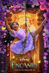

Overview
Walt Disney Animation Studios’ Encanto tells the tale of an extraordinary family, the Madrigals, who live hidden in the mountains of Colombia… in a magical house, in a vibrant town, in a wondrous, charmed place called an Encanto. The magic of the Encanto has blessed every child in the family with a unique gift, from super strength to the power to heal—every child except one, that is: Mirabel. But when she discovers that the magic surrounding the Encanto is in danger, Mirabel decides that she—the only ordinary Madrigal—might just be her exceptional family’s last hope.
Meet the characters
Mirabel
Mirabel is the only child in her extraordinary family who wasn’t blessed with a magical gift. She’s determined to prove that she belongs—denying to everyone, including herself, that she feels all alone… even in her own house. Still, there’s something very special about Mirabel; her family just hasn’t figured out what that is just yet!
Abuela Alma
Alma is the matriarch of the Madrigal family. Her steadfast determination and unwavering hope led her to the magical Encanto, where she raised triplets Julieta, Pepa, and Bruno. To her surprise and delight, each of her children was blessed with a magical gift upon their 5th birthday, and the tradition continued with each of their children—except for Mirabel.
Julieta and Agustín
Julieta and Agustín are parents to three daughters: Isabela, Luisa, and Mirabel. Julieta, one of Alma’s triplets, was blessed with the power to heal. Radiating warmth and kindness, she wields no magic wand, however—her magic is found in the food she lovingly prepares for all who need it. Meanwhile, Agustín is somewhat a fish out of water, having married into the magical family. Awkward and accident-prone, he always has the best intentions, especially when it comes to his daughters.
Isabela
Mirabel’s sister Isabela is pretty much perfect, with an abundance of grace and poise—not to mention a magical ability to make plants grow and flowers bloom.
Luisa
Hardworking and determined, Mirabel’s other sister Luisa was given the gift of super strength. She is the go-to person for all of the heavy lifting.
Pepa and Felix
Pepa and Félix are Mirabel’s quirky aunt and fun-loving uncle, and are parents to Dolores, Camilo, and Antonio. Pepa, one of Abuela Alma’s triplets, was gifted with the power to control the weather with her emotions. The forecast is often unpredictable, however, as Pepa’s emotions are far-reaching and ever-changing. Félix, meanwhile, provides a grounding force for his deeply passionate wife—he’s easygoing and often the life of the party.
Antonio
The youngest of the Madrigal clan, Antonio is shy with a huge heart. He has a special connection to Mirabel, relying on her for comfort and courage—especially on an important day when his cousin finds him nervously hiding under his bed.
Camilo
Camilo, Pepa and Félix’s middle child, was born to entertain. Throw in his magical gift that allows him to switch up his appearance to be whomever he wants to be in the moment, and he’s secured his place in the spotlight.
Dolores
Dolores is Mirabel’s cousin who’s usually the first to know the town’s biggest secrets, most compelling drama, and juiciest revelations. She can’t help it: she was blessed with extraordinary hearing. Whisper if you will, but Dolores can still hear it!
Bruno
The third of Alma’s triplets, Bruno has been estranged from the Madrigal family for as long as Mirabel can remember. Gifted with the ability to see the future, he made honest but often doomsaying predictions that proved problematic for Abuela and the rest of the family… so he disappeared, becoming the uncle nobody talks about.